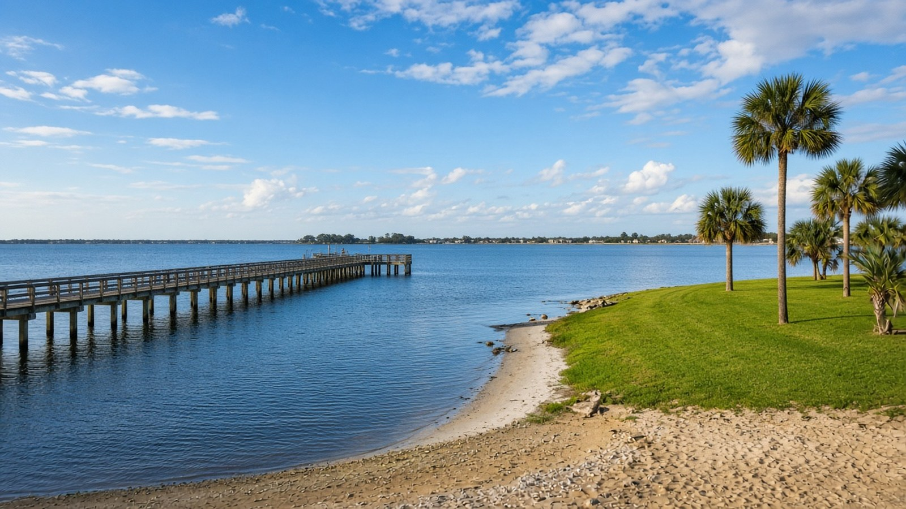

Port Charlotte Real Estate, Explained

Port Charlotte & Charlotte County, FL
Quick Answer
Port Charlotte is several markets under one name.
Port Charlotte is the largest community in Charlotte County, and it is unincorporated. Prices and housing age vary sharply by ZIP code, and canal access and flood zone change a home more than the street name does. Start with the kind of home and water access you want, then compare specific areas.
If you are searching for Port Charlotte real estate, sort the market by area and water access before you compare prices.
What Port Charlotte real estate actually includes
Port Charlotte is a census-designated place, not a city. It has no mayor or city limits, and it is governed by the Charlotte County Board of County Commissioners. The only incorporated city in the county is Punta Gorda, a few miles southeast. Many buyers compare the two, and our Punta Gorda real estate guide explains how they differ.
The area was developed in the 1950s by General Development Corporation, led by the Mackle brothers, which sold home sites on a large platted grid. That grid is why so many Port Charlotte streets look similar and why a lot of housing from the 1970s and 1980s sits next to newer construction. It also explains why the same word, Port Charlotte, can mean a canal-front home with boat access, a home on a dry street a mile from the water, or a newer build near the Cape Haze peninsula.
Our Port Charlotte area page is the best overview, and the team also covers Grassy Point, Lea Marie Island, Section 15, and South Gulf Cove and Gulf Cove.
A few facts to put Port Charlotte in context
These figures describe the Port Charlotte census place or the wider county. They are not a substitute for recent comparable sales on a specific house.
| Port Charlotte: Context Figures | ||
|---|---|---|
| Topic | Figure | How to read it |
| Population | 66,133 | U.S. Census Bureau, American Community Survey (ACS) 5-year estimates for 2020-2024, Port Charlotte CDP. Punta Gorda city is 20,278. |
| Median age | 55.4 | ACS 2020-2024. Charlotte County overall is 59.9, and Punta Gorda city is 66.3. |
| Median owner-reported home value | $269,900 | ACS 2020-2024 median value of owner-occupied homes, with a margin of error of about $7,100. This is what owners estimated their homes were worth, not a median sale price. Charlotte County is $328,900, and Punta Gorda city is $518,100. |
| Median household income | $63,844 | ACS 2020-2024, in 2024 dollars, with a margin of error of about $2,000. |
| Owner-occupied homes | 83.2 percent | ACS 2020-2024 share of occupied housing units that are owner-occupied. |
| Single-family detached homes | 85.7 percent | Share of all housing units that are detached single-family homes, ACS 2020-2024. Only 9.4 percent are in buildings with five or more units. |
| Median year built | 1983 | ACS 2020-2024. The Charlotte County median is 1991. Age matters for roofs, windows, and plumbing, so ask for the dates on the specific house. |
| Seasonal housing units | 7.2 percent | Share of housing units held for seasonal, recreational, or occasional use, ACS 2020-2024. The county overall is 15.7 percent, so Port Charlotte is more of a year-round market than the county as a whole. |
| Metro house-price index | 391.34 in Q2 2026 | Federal Housing Finance Agency (FHFA) all-transactions index for the Punta Gorda, FL metropolitan area (Charlotte County). Down 0.2 percent from Q2 2025 and 7.7 percent below Q2 2024. A repeat-transaction index, not a median sale price. |
| County listings | 2,856 | Florida Gulf Coast University Regional Economic Research Institute, typical day in October 2026, Charlotte County active residential listings (single-family homes, condominiums, and townhomes; pending excluded). County inventory, not a Port Charlotte-only count. |
Sources: U.S. Census Bureau ACS 2020-2024; FHFA House Price Index, Q2 2026; FGCU Regional Economic Research Institute, October 2026.
Key Takeaways
- Port Charlotte is unincorporated, with a 2020-2024 ACS population of 66,133 and a median age of 55.4.
- The ACS 2020-2024 median owner-reported home value is $269,900, compared with $328,900 for Charlotte County and $518,100 for Punta Gorda city. That is a survey figure, not a median sale price.
- Housing age and values differ sharply by ZIP code. Median year built ranges from 1977 to 2001 across the five Port Charlotte ZIP areas.
- Detached single-family homes make up 85.7 percent of Port Charlotte's housing units, and 7.2 percent of units are seasonal, well below the county's 15.7 percent.
- The FHFA index for the Punta Gorda metro area was 391.34 in Q2 2026, down 0.2 percent from Q2 2025 and 7.7 percent below Q2 2024.
- Charlotte County had 2,856 active residential listings on a typical day in October 2026, per Florida Gulf Coast University.
Port Charlotte by ZIP code
The ZIP code is the quickest way to see how different the market is. The table below uses the Census Bureau's ZIP Code Tabulation Areas, which approximate ZIP codes, and shows ACS 2020-2024 median owner-reported values from lowest to highest. These are all Port Charlotte ZIP areas, and the spread is larger than many people expect.
| Port Charlotte ZIP Areas: Owner-Reported Home Values | ||
|---|---|---|
| Area | Median value | How to read it |
| ZIP 33952 | $237,700 | Median year built 1977. The lowest median owner-reported value of the five Port Charlotte ZIP areas in the ACS 2020-2024 data. |
| ZIP 33980 | $241,500 | Median year built 1992. |
| ZIP 33948 | $298,700 | Median year built 1987. |
| ZIP 33954 | $332,600 | Median year built 1997. |
| ZIP 33981 | $386,800 | Median year built 2001. This ZIP area covers the Gulf Cove area on the Cape Haze peninsula. |
Source: U.S. Census Bureau ACS 2020-2024, ZIP Code Tabulation Areas. Margins of error range from roughly $7,800 to $21,500. These are survey estimates, not sale prices.
Use the table as a starting point, not a ranking. A lower median value often reflects older construction, smaller lots, or non-waterfront streets, while a higher one often reflects newer homes and more canal frontage. None of that tells you whether a particular house is a good purchase.
Canal, harbor, or inland
Port Charlotte sits at the north end of Charlotte Harbor, and it has more than one kind of waterfront. Open-canal and harbor-access homes are tied to tidal water, so seawalls, docks, and boat lifts are part of the property. Locked-canal communities, such as South Gulf Cove, route boats through a county-run lock, and that changes how the water behaves and how long a trip takes. Our South Gulf Cove guide covers that case in detail. Non-waterfront streets are the largest group, and for many buyers they are the practical choice.
Port Charlotte Beach Park is a county bayfront park with a beach, a fishing pier, a boat ramp, a pool, courts, and rental pavilions, so you do not need a private dock to be on the water. If you do want one, read our waterfront buying guide before you shop.
Storms, insurance, and flood zones
Two major hurricanes have come ashore near Port Charlotte in the last 25 years. Hurricane Charley came ashore on August 13, 2004, as a Category 4 hurricane near Cayo Costa and then moved across the Punta Gorda area, and Hurricane Ian made a second landfall near Punta Gorda on September 28, 2022, according to the National Hurricane Center's final reports. Neither fact tells you what a given house will cost to insure. Both mean that roof age, wind-mitigation features, and the FEMA flood zone belong in the first conversation.
FEMA's Risk Rating 2.0 prices flood insurance for each property using factors such as distance to flooding sources, ground elevation, first-floor height, foundation type, construction, and the number of floors. An elevation certificate is optional, but FEMA may use it to establish a more favorable first-floor height. Ask for the certificate if one exists, and get a flood quote on any home in or near a mapped flood zone before you remove your contingencies.
Buying in Port Charlotte: a few local realities
Age of the home drives the inspection. A median year built of 1983 means many homes need a close look at roof, HVAC, plumbing, and windows. Ask for permits and replacement dates, and treat them as part of the price.
Homestead and Save Our Homes. If the house will be your primary residence, ask the Charlotte County Property Appraiser about Florida's homestead exemption. The state exemption is up to $50,000 of assessed value, with the first $25,000 applying to all property taxes. After the first year, Save Our Homes limits annual assessed-value increases to the lesser of 3 percent or the change in the Consumer Price Index, which is 2.7 percent for 2026. You must own and live in the home as your permanent residence on January 1 and apply by March 1.
Rent or buy. If you are not sure which is right, read our post on whether to rent or buy a home, and before you write an offer, read things you should not do when buying a home. The buyers page outlines how the team works, and sellers can start with a home valuation.
Frequently asked questions
Is Port Charlotte a city?
No. Port Charlotte is an unincorporated census-designated place in Charlotte County and is governed by the county commission. Punta Gorda is the only incorporated city in the county.
What is the median home value in Port Charlotte?
The Census Bureau's ACS 2020-2024 estimate for the median owner-reported value is $269,900, with a margin of error of about $7,100. That is a survey of what owners estimated their homes were worth, not a median sale price. Ask for recent comparable sales in the specific area you are considering.
How are Port Charlotte ZIP codes different?
Quite different. In ACS 2020-2024 data, the five Port Charlotte ZIP areas have median owner-reported values from $237,700 to $386,800 and median years built from 1977 to 2001. Housing age, lot type, and water access explain much of the spread.
Does Port Charlotte have waterfront homes?
Yes, in several forms: tidal canals and harbor-access homes, locked-canal communities such as South Gulf Cove, and non-waterfront streets. Verify seawall, dock, lift, and boat access for the exact property before you buy.
Is Port Charlotte in a flood zone?
Some of it is, and some of it is not. Zones vary parcel by parcel, so check the FEMA flood zone for the exact address and get a flood-insurance quote early. An elevation certificate can help the quote.
Is Port Charlotte different from Punta Gorda?
Yes. Punta Gorda is an incorporated city with a walkable downtown and a median owner-reported home value of $518,100 in the ACS data, while Port Charlotte is a larger unincorporated community with a $269,900 median. They are neighbors, and many buyers look at both.
Should I rent or buy in Port Charlotte?
That depends on how long you plan to stay, your financing, and insurance costs, not only on list prices. We walk through the tradeoffs in Should I Rent or Buy a Home?
Talk with The Helgemo Team
If you are buying, selling, or just trying to understand which part of Port Charlotte fits, talk with a team that works this market in person. Call or text The Helgemo Team at (941) 770-2275, or visit the contact page. The office is at 320 Cross Street, Punta Gorda, Florida 33950. You can also meet Brian Helgemo or read more about the team.
Related Reading
- Port Charlotte area page
- South Gulf Cove: a local living guide
- Buying vacant land in Punta Gorda
- Is Punta Gorda a good place to live?
- A Local Guide to Punta Gorda Real Estate
Thinking About Buying or Selling?
If you are buying, selling, or just trying to understand which part of Port Charlotte fits, talk with a team that works this market in person. Call or text The Helgemo Team at (941) 770-2275.
Sources: U.S. Census Bureau, American Community Survey 2020-2024 estimates for Port Charlotte CDP, via Census Reporter; U.S. Census Bureau, American Community Survey 2020-2024 estimates for Punta Gorda city, via Census Reporter; U.S. Census Bureau, American Community Survey 2020-2024 estimates for Charlotte County, via Census Reporter; U.S. Census Bureau, American Community Survey 2020-2024 estimates for ZIP Code Tabulation Area 33948, via Census Reporter; U.S. Census Bureau, American Community Survey 2020-2024 estimates for ZIP Code Tabulation Area 33952, via Census Reporter; U.S. Census Bureau, American Community Survey 2020-2024 estimates for ZIP Code Tabulation Area 33954, via Census Reporter; U.S. Census Bureau, American Community Survey 2020-2024 estimates for ZIP Code Tabulation Area 33980, via Census Reporter; U.S. Census Bureau, American Community Survey 2020-2024 estimates for ZIP Code Tabulation Area 33981, via Census Reporter; Port Charlotte, Florida (history and government), Wikipedia; Charlotte County, Port Charlotte Beach Park; National Hurricane Center, Tropical Cyclone Report: Hurricane Charley; National Hurricane Center, Tropical Cyclone Report: Hurricane Ian; FEMA, NFIP Risk Rating 2.0 pricing approach; Florida Department of Revenue, Property Tax Information for Homestead Exemption; Florida Department of Revenue, Save Our Homes; Federal Housing Finance Agency all-transactions House Price Index, Punta Gorda, FL metropolitan area, Q2 2026; Florida Gulf Coast University Regional Economic Research Institute, Charlotte County active residential listings, October 2026. Census place, ZIP-area, metro, and county figures are context only, not a substitute for recent comparable sales on a specific house. Data and sources reviewed November 10, 2026.